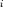
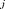
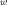
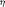
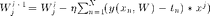
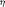
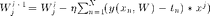
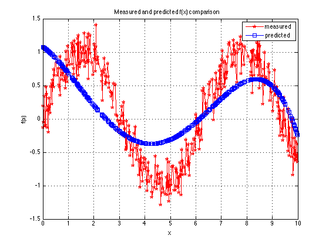
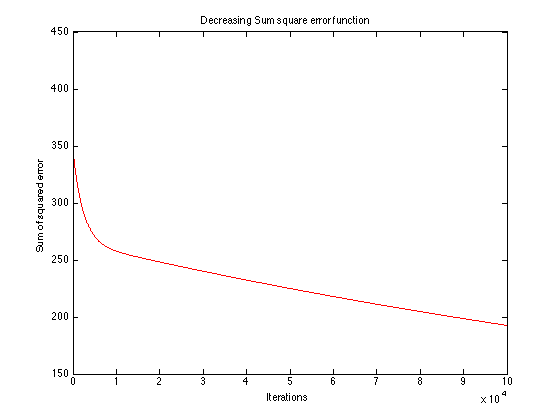

Contents
Batch Gradient descent
This is the script for batch gradient descent algorithm using polynomial base function
clc;
clear;
close all;
Generate data: generate t0 from x0
x0=[0.0050:0.0050:10.0000]'; noise=0.2.*randn(1,2000)'; t0=sin(x0)+noise; % plot(x0,t0); % hold on % Min-max norm x=(x0-min(x0))/(max(x0)-min(x0)); t=t0;
Split data into train set and test set
idx=crossvalind('Kfold',size(x0,1),5);
test_idx = find(idx==1);
train_idx = find(idx~=1);
train_x=x(train_idx,:);
train_t=t(train_idx,:);
test_x=x(test_idx,:);
test_t=t(test_idx,:);
Training params
- Below is the equation for Batch Gradient Descent. Here  is the iteration number,  is the power of coresponding ,
 iterates through all data points.  is the learning rate for each iteration. 
iterates through all data points.  is the learning rate for each iteration. 
M=4; % Maximum power of x
max_iter=100000;
eta=0.7;
W=zeros(M+1,1);
W_threshold = repmat(0.0001, M+1, 1);
err_threshold = .0001;
Training
Here comes the base matrix with power 4
x_pol=[ones(size(train_x,1),1) train_x train_x.*train_x train_x.*train_x.*train_x ... train_x.*train_x.*train_x.*train_x]; % size(x_pol) for iter = 1:max_iter W_prev = W; fx = x_pol*W; W = W - eta*1/size(train_x,1)*sum(repmat(fx - train_t,1,M+1).*x_pol)'; % Sum square error on training err(iter,1) = 1/2*sum((fx - train_t).^2); % check for termination conditions if abs(W_prev - W) < W_threshold break; elseif iter>1 && abs(err(iter-1,1)-err(iter,1))< err_threshold break; end end
Testing
pred_fx=[ones(size(test_x,1),1) test_x test_x.*test_x test_x.*test_x.*test_x ...
test_x.*test_x.*test_x.*test_x]*W;
test_err = 1/2*sum((pred_fx - x(test_idx,:)).^2);
rmse = sqrt(2*test_err/size(test_idx,1));
Results 1: Figure for predicted and actual comparison
fig1=figure(1); plot(x0(test_idx),t0(test_idx),'rp-',x0(test_idx),pred_fx,'bs-'); legend('measured', 'predicted'); grid on; xlabel('x'); ylabel('f(x)'); title('Measured and predicted f(x) comparison'); saveas(fig1,'ms_pred_cmp.jpg','jpg');

Result 2: Error curve with different iterations
fig2=figure(2); plot(err,'r'); title('Decreasing Sum square error function'); xlabel('Iterations'); ylabel('Sum of squared error'); saveas(fig2,'Sum_sqr_err.jpg','jpg');

Result 3: Final Root-Mean-Square Error and W
fprintf('\nRoot mean square error: '); rmse fprintf('\ncoefficient W:\n'); W
Root mean square error:
rmse =
0.6173
coefficient W:
W =
1.0791
-2.7606
-16.5728
48.1560
-30.1568